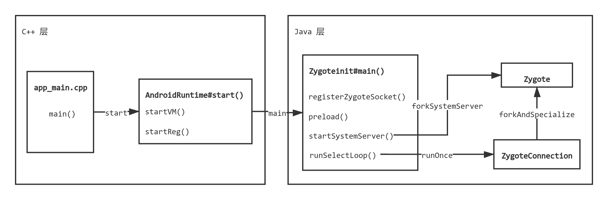

前言 zygote 进程是 Android 系统中第一个拥有 Java 运行环境的进程，它由用户空间 1 号进程 init 进程通过解析 init.rc 文件创建，从 init 进程 fork 而来。从 zygote（受精卵）这个富含生物意义的名字可以知道，它是一个孵化器。Android 系统中所有运行在 Java 虚拟机中的系统服务以及应用均由 zygote 进程孵化而来。
理解 zygote 进程的启动过程以及所做的工作，将为理解 Java 层系统服务以及所有应用的进程启动流程打下基础。
概述 zygote 通过克隆（fork）的方式创建子进程，fork 出来的子进程将继承父进程的所有资源，基于这个特性，zygote 进程在启动过程将创建 Java ART 虚拟机，预加载一个 Java 进程需要的所有系统资源，之后子进程被创建后，就可以直接使用这些资源运行了。
自 Android 5.0 系统开始，zygote 不再是一个进程，而是两个进程，一个是 32 位 zygote，负责孵化 32 位进程（为了兼容使用了 armeabi 和 armeabi-v7a 等 32 位架构的本地动态库的应用），另一个是 64 位 zygote 进程，负责孵化 64 位应用进程（可加载 arm64-v8a 等 64 位架构本地库）。
zygote 进程主要做了如下工作：
创建虚拟机，加载系统 Java 类以及注册系统类所依赖的 JNI 方法；
预加载应用程序进程所需的 drawable 和 color 资源，准备 WebView 和 OpenGL；
创建 socket 服务端，以便接收和处理创建应用进程的请求；
启动 system_server 服务进程，用于承载整个 framework 层运行的系统服务；
待命以随即处理到来的任务请求。
参考相关资料，对 Android 6.0.1 系统中 zygote 进程启动关键流程进行分析。
zygote 进程启动 zygote 进程由 init 解析 init.rc 文件启动，首先看一下启动 zygote 的 rc 文件内容：
32 位 zygote 启动内容在 init.zygote32.rc 文件中，64 位 zygote 启动内容在 init.zygote64.rc 中：
提示：自 Android 9.0 系统开始，两个 zygote 启动配置放在一个文件中：init.zygote64_32.rc。
1 2 3 4 5 6 7 8 9 10 service zygote /system/bin/app_process -Xzygote /system/bin --zygote --start-system-server class main socket zygote stream 660 root system onrestart write /sys/android_power/request_state wake onrestart write /sys/power/state on onrestart restart media onrestart restart netd writepid /dev/cpuset/foreground/tasks
1 2 3 4 5 6 7 8 9 10 service zygote /system/bin/app_process64 -Xzygote /system/bin --zygote --start-system-server class main socket zygote stream 660 root system onrestart write /sys/android_power/request_state wake onrestart write /sys/power/state on onrestart restart media onrestart restart netd writepid /dev/cpuset/foreground/tasks
两者的唯一区别只在于可执行文件的不同，/system/bin/app_process 和 /system/bin/app_process64。
zygote 将在如下情况下重启：
servicemanager 进程死亡（启动配置中包含 onrestart restart zygote）；
surfaceflinger 进程死亡（启动配置中包含 onrestart restart zygote）；
Zygote 死亡（启动配置中为非 oneshot）；
system_server 进程死亡；
zygote 进程入口 zygote 可执行文件 app_process 的实现代码在 frameworks/base/cmds/app_process/app_main.cpp 中，入口为 main 函数：
1 2 3 4 5 6 7 8 9 10 11 12 13 14 15 16 17 18 19 20 21 22 23 24 25 26 27 28 29 30 31 32 33 34 35 36 37 38 39 40 41 42 43 44 45 46 47 48 49 50 51 52 53 54 55 56 57 58 59 60 61 62 63 64 65 66 67 68 69 70 71 72 73 74 75 76 77 78 79 80 81 82 83 84 85 86 87 88 89 90 91 92 93 94 95 96 97 98 99 100 101 102 103 104 105 106 107 108 109 110 111 112 113 114 115 116 117 118 119 120 121 122 123 124 125 126 127 #if defined(__LP64__) static const char ABI_LIST_PROPERTY[] = "ro.product.cpu.abilist64" ;static const char ZYGOTE_NICE_NAME[] = "zygote64" ;#else static const char ABI_LIST_PROPERTY[] = "ro.product.cpu.abilist32" ;static const char ZYGOTE_NICE_NAME[] = "zygote" ;#endif int main (int argc, char * const argv[]) if (prctl (PR_SET_NO_NEW_PRIVS, 1 , 0 , 0 , 0 ) < 0 ) { if (errno != EINVAL) { LOG_ALWAYS_FATAL ("PR_SET_NO_NEW_PRIVS failed: %s" , strerror (errno)); return 12 ; } } AppRuntime runtime (argv[0 ], computeArgBlockSize(argc, argv)) ; argc--; argv++; int i; for (i = 0 ; i < argc; i++) { if (argv[i][0 ] != '-' ) { break ; } if (argv[i][1 ] == '-' && argv[i][2 ] == 0 ) { ++i; break ; } runtime.addOption (strdup (argv[i])); } bool zygote = false ; bool startSystemServer = false ; bool application = false ; String8 niceName; String8 className; ++i; while (i < argc) { const char * arg = argv[i++]; if (strcmp (arg, "--zygote" ) == 0 ) { zygote = true ; niceName = ZYGOTE_NICE_NAME; } else if (strcmp (arg, "--start-system-server" ) == 0 ) { startSystemServer = true ; } else if (strcmp (arg, "--application" ) == 0 ) { application = true ; } else if (strncmp (arg, "--nice-name=" , 12 ) == 0 ) { niceName.setTo (arg + 12 ); } else if (strncmp (arg, "--" , 2 ) != 0 ) { className.setTo (arg); break ; } else { --i; break ; } } Vector<String8> args; if (!className.isEmpty ()) { args.add (application ? String8 ("application" ) : String8 ("tool" )); runtime.setClassNameAndArgs (className, argc - i, argv + i); } else { maybeCreateDalvikCache (); if (startSystemServer) { args.add (String8 ("start-system-server" )); } char prop[PROP_VALUE_MAX]; if (property_get (ABI_LIST_PROPERTY, prop, NULL ) == 0 ) { LOG_ALWAYS_FATAL ("app_process: Unable to determine ABI list from property %s." , ABI_LIST_PROPERTY); return 11 ; } String8 abiFlag ("--abi-list=" ) ; abiFlag.append (prop); args.add (abiFlag); for (; i < argc; ++i) { args.add (String8 (argv[i])); } } if (!niceName.isEmpty ()) { runtime.setArgv0 (niceName.string ()); set_process_name (niceName.string ()); } if (zygote) { runtime.start ("com.android.internal.os.ZygoteInit" , args, zygote); } else if (className) { runtime.start ("com.android.internal.os.RuntimeInit" , args, zygote); } else { fprintf (stderr, "Error: no class name or --zygote supplied.\n" ); app_usage (); LOG_ALWAYS_FATAL ("app_process: no class name or --zygote supplied." ); return 10 ; } }
AppRuntime.main 函数做了如下工作：
创建了 AppRuntime 对象，传入虚拟机所需的选项；
解析 init.rc 文件的 zygote 启动参数；
调用 AppRuntime.start 函数，根据启动 zygote 还是命令行（className），进入 ZygoteInit 或者 RuntimeInit 参数分支。
提示：app_process 可使用命令行调用，启动一个 Java 类，并调用 main 方法，此时有 className 参数，处于非 zygote 模式。
格式：
1 app_process [可选参数] 命令所在路径 启动的类名 [可选参数]
示例：
1 app_process -Djava.class.path=Hello.dex /data/local / com.example.Hello
AppRuntim.start 下面进入 AppRuntime 的 start 函数中，以 ZygoteInit 参数分支为路径进行分析：
1 2 3 4 5 6 7 8 9 10 11 12 13 14 15 16 17 18 19 20 21 22 23 24 25 26 27 28 29 30 31 32 33 34 35 36 37 38 39 40 41 42 43 44 45 46 47 48 49 50 51 52 53 54 55 56 57 58 59 60 61 62 63 64 65 66 67 68 69 70 71 72 73 74 75 76 77 78 79 80 81 82 83 84 85 86 void AndroidRuntime::start (const char * className, const Vector<String8>& options, bool zygote) ALOGD (">>>>>> START %s uid %d <<<<<<\n" , className != NULL ? className : "(unknown)" , getuid ()); static const String8 startSystemServer ("start-system-server" ) for (size_t i = 0 ; i < options.size (); ++i) { if (options[i] == startSystemServer) { const int LOG_BOOT_PROGRESS_START = 3000 ; LOG_EVENT_LONG (LOG_BOOT_PROGRESS_START, ns2ms (systemTime (SYSTEM_TIME_MONOTONIC))); } } const char * rootDir = getenv ("ANDROID_ROOT" ); if (rootDir == NULL ) { rootDir = "/system" ; if (!hasDir ("/system" )) { LOG_FATAL ("No root directory specified, and /android does not exist." ); return ; } setenv ("ANDROID_ROOT" , rootDir, 1 ); } JniInvocation jni_invocation; jni_invocation.Init (NULL ); JNIEnv* env; if (startVm (&mJavaVM, &env, zygote) != 0 ) { return ; } onVmCreated (env); if (startReg (env) < 0 ) { ALOGE ("Unable to register all android natives\n" ); return ; } jclass stringClass; jobjectArray strArray; jstring classNameStr; stringClass = env->FindClass ("java/lang/String" ); assert (stringClass != NULL ); strArray = env->NewObjectArray (options.size () + 1 , stringClass, NULL ); assert (strArray != NULL ); classNameStr = env->NewStringUTF (className); assert (classNameStr != NULL ); env->SetObjectArrayElement (strArray, 0 , classNameStr); for (size_t i = 0 ; i < options.size (); ++i) { jstring optionsStr = env->NewStringUTF (options.itemAt (i).string ()); assert (optionsStr != NULL ); env->SetObjectArrayElement (strArray, i + 1 , optionsStr); } char * slashClassName = toSlashClassName (className); jclass startClass = env->FindClass (slashClassName); if (startClass == NULL ) { ALOGE ("JavaVM unable to locate class '%s'\n" , slashClassName); } else { jmethodID startMeth = env->GetStaticMethodID (startClass, "main" , "([Ljava/lang/String;)V" ); if (startMeth == NULL ) { ALOGE ("JavaVM unable to find main() in '%s'\n" , className); } else { env->CallStaticVoidMethod (startClass, startMeth, strArray); } } free (slashClassName); ALOGD ("Shutting down VM\n" ); if (mJavaVM->DetachCurrentThread () != JNI_OK) ALOGW ("Warning: unable to detach main thread\n" ); if (mJavaVM->DestroyJavaVM () != 0 ) ALOGW ("Warning: VM did not shut down cleanly\n" ); }
上面的代码也比较清晰，工作如下：
startVm 函数创建 ART 虚拟机；startReg 函数注册系统 JNI 方法；收集 options 参数，调用并传递给 ZygoteInit.main()。
下面针对每个方法具体分析。
AppRuntime.startVm 1 2 3 4 5 6 7 8 9 10 11 12 13 14 15 16 17 18 19 20 21 22 23 24 25 26 27 28 29 30 31 32 33 34 35 36 37 38 39 40 41 42 43 44 45 46 47 48 49 50 51 52 53 54 55 56 57 58 59 60 61 62 63 64 65 66 67 68 69 70 71 72 73 74 75 76 77 78 79 int AndroidRuntime::startVm (JavaVM** pJavaVM, JNIEnv** pEnv, bool zygote) JavaVMInitArgs initArgs; bool checkJni = false ; property_get ("dalvik.vm.checkjni" , propBuf, "" ); if (strcmp (propBuf, "true" ) == 0 ) { checkJni = true ; } else if (strcmp (propBuf, "false" ) != 0 ) { property_get ("ro.kernel.android.checkjni" , propBuf, "" ); if (propBuf[0 ] == '1' ) { checkJni = true ; } } ALOGD ("CheckJNI is %s\n" , checkJni ? "ON" : "OFF" ); if (checkJni) { addOption ("-Xcheck:jni" ); } parseRuntimeOption ("dalvik.vm.zygote.max-boot-retry" , cachePruneBuf, "-Xzygote-max-boot-retry=" ); property_get ("dalvik.vm.execution-mode" , propBuf, "" ); if (strcmp (propBuf, "int:portable" ) == 0 ) { executionMode = kEMIntPortable; } else if (strcmp (propBuf, "int:fast" ) == 0 ) { executionMode = kEMIntFast; } else if (strcmp (propBuf, "int:jit" ) == 0 ) { executionMode = kEMJitCompiler; } parseRuntimeOption ("dalvik.vm.heapstartsize" , heapstartsizeOptsBuf, "-Xms" , "4m" ); parseRuntimeOption ("dalvik.vm.heapsize" , heapsizeOptsBuf, "-Xmx" , "16m" ); parseRuntimeOption ("dalvik.vm.heapgrowthlimit" , heapgrowthlimitOptsBuf, "-XX:HeapGrowthLimit=" ); parseRuntimeOption ("dalvik.vm.heapminfree" , heapminfreeOptsBuf, "-XX:HeapMinFree=" ); parseRuntimeOption ("dalvik.vm.heapmaxfree" , heapmaxfreeOptsBuf, "-XX:HeapMaxFree=" ); parseRuntimeOption ("dalvik.vm.heaptargetutilization" , heaptargetutilizationOptsBuf, "-XX:HeapTargetUtilization=" ); if (!hasFile ("/system/etc/preloaded-classes" )) { ALOGE ("Missing preloaded-classes file, /system/etc/preloaded-classes not found: %s\n" , strerror (errno)); return -1 ; } parseRuntimeOption ("ro.build.fingerprint" , fingerprintBuf, "-Xfingerprint:" ); initArgs.version = JNI_VERSION_1_4; initArgs.options = mOptions.editArray (); initArgs.nOptions = mOptions.size (); initArgs.ignoreUnrecognized = JNI_FALSE; if (JNI_CreateJavaVM (pJavaVM, pEnv, &initArgs) < 0 ) { ALOGE ("JNI_CreateJavaVM failed\n" ); return -1 ; } return 0 ; }
上述代码主要是为虚拟机初始化添加运行选项，最后调用 JNI_CreateJavaVM 创建虚拟机，下面就进入了虚拟机流程了，需要理解虚拟机时再探究其源码。
下面回到上面 AppRuntime.start 函数，看 startReg 的实现。
AppRuntime.startReg 1 2 3 4 5 6 7 8 9 10 11 12 13 14 15 16 17 18 19 20 21 22 23 24 #define NELEM(x) (sizeof(x)/sizeof(*(x))) int AndroidRuntime::startReg (JNIEnv* env) androidSetCreateThreadFunc ((android_create_thread_fn) javaCreateThreadEtc); ALOGV ("--- registering native functions ---\n" ); env->PushLocalFrame (200 ); if (register_jni_procs (gRegJNI, NELEM (gRegJNI), env) < 0 ) { env->PopLocalFrame (NULL ); return -1 ; } env->PopLocalFrame (NULL ); return 0 ; }
1 2 3 4 5 6 7 8 9 10 11 12 13 14 15 16 17 18 19 20 21 22 23 24 25 26 27 28 29 30 31 32 #define REG_JNI(name) { name, #name } struct RegJNIRec { int const char * mName; }; static const RegJNIRec gRegJNI[] = { REG_JNI (register_com_android_internal_os_RuntimeInit), REG_JNI (register_android_os_SystemClock), REG_JNI (register_android_util_EventLog), REG_JNI (register_android_util_Log), REG_JNI (register_android_content_AssetManager), REG_JNI (register_android_content_StringBlock), REG_JNI (register_android_animation_PropertyValuesHolder), REG_JNI (register_com_android_internal_content_NativeLibraryHelper), REG_JNI (register_com_android_internal_net_NetworkStatsFactory), }; static int register_jni_procs (const RegJNIRec array[], size_t count, JNIEnv* env) for (size_t i = 0 ; i < count; i++) { if (array[i].mProc (env) < 0 ) { #ifndef NDEBUG ALOGD ("----------!!! %s failed to load\n" , array[i].mName); #endif return -1 ; } } return 0 ;
startReg 函数主要是注册系统类的 JNI 方法，使用 register_jni_procs 进行循环调用注册方法，每个 mProc 都指向 gRegJNI 数组里存放的结构体中的 mProc 函数指针，例如 register_com_android_internal_os_RuntimeInit，查看一下实现：
1 2 3 4 5 6 7 8 9 10 11 12 13 14 static JNINativeMethod gMethods[] = { { "nativeFinishInit" , "()V" , (void *) com_android_internal_os_RuntimeInit_nativeFinishInit }, { "nativeZygoteInit" , "()V" , (void *) com_android_internal_os_RuntimeInit_nativeZygoteInit }, { "nativeSetExitWithoutCleanup" , "(Z)V" , (void *) com_android_internal_os_RuntimeInit_nativeSetExitWithoutCleanup }, }; int register_com_android_internal_os_RuntimeInit (JNIEnv* env) return jniRegisterNativeMethods (env, "com/android/internal/os/RuntimeInit" , gMethods, NELEM (gMethods)); }
startReg 之后下面就是通过 env->CallStaticVoidMethod 启动 Zygoteinit.main 进入 Java 层了。
ZygoteInit.main 1 2 3 4 5 6 7 8 9 10 11 12 13 14 15 16 17 18 19 20 21 22 23 24 25 26 27 28 29 30 31 32 33 34 35 36 37 38 39 40 41 42 43 44 45 46 47 48 49 50 51 52 53 54 55 56 57 58 59 public static void main (String argv[]) try { RuntimeInit.enableDdms(); SamplingProfilerIntegration.start(); boolean startSystemServer = false ; String socketName = "zygote" ; String abiList = null ; for (int i = 1 ; i < argv.length; i++) { if ("start-system-server" .equals(argv[i])) { startSystemServer = true ; } else if (argv[i].startsWith(ABI_LIST_ARG)) { abiList = argv[i].substring(ABI_LIST_ARG.length()); } else if (argv[i].startsWith(SOCKET_NAME_ARG)) { socketName = argv[i].substring(SOCKET_NAME_ARG.length()); } else { throw new RuntimeException("Unknown command line argument: " + argv[i]); } } if (abiList == null ) { throw new RuntimeException("No ABI list supplied." ); } registerZygoteSocket(socketName); EventLog.writeEvent(LOG_BOOT_PROGRESS_PRELOAD_START, SystemClock.uptimeMillis()); preload(); EventLog.writeEvent(LOG_BOOT_PROGRESS_PRELOAD_END, SystemClock.uptimeMillis()); SamplingProfilerIntegration.writeZygoteSnapshot(); gcAndFinalize(); Trace.setTracingEnabled(false ); if (startSystemServer) { startSystemServer(abiList, socketName); } Log.i(TAG, "Accepting command socket connections" ); runSelectLoop(abiList); closeServerSocket(); } catch (MethodAndArgsCaller caller) { caller.run(); } catch (RuntimeException ex) { Log.e(TAG, "Zygote died with exception" , ex); closeServerSocket(); throw ex; } }
上述代码做了如下工作：
使用 registerZygoteSocket 注册 socket 服务端，为能够接收创建子进程的请求提供支持；
使用 preload() 预加载应用进程所需资源；
启动 system_server 服务进程；
启动 socket 循环，等待外部请求，随时响应处理。
下面进入函数具体分析。
ZygoteInit.registerZygoteSocket 1 2 3 4 5 6 7 8 9 10 11 12 13 14 15 16 17 18 19 20 21 22 23 24 25 26 27 28 private static final String ANDROID_SOCKET_PREFIX = "ANDROID_SOCKET_" ;private static void registerZygoteSocket (String socketName) if (sServerSocket == null ) { int fileDesc; final String fullSocketName = ANDROID_SOCKET_PREFIX + socketName; try { String env = System.getenv(fullSocketName); fileDesc = Integer.parseInt(env); } catch (RuntimeException ex) { throw new RuntimeException(fullSocketName + " unset or invalid" , ex); } try { FileDescriptor fd = new FileDescriptor(); fd.setInt$(fileDesc); sServerSocket = new LocalServerSocket(fd); } catch (IOException ex) { throw new RuntimeException( "Error binding to local socket '" + fileDesc + "'" , ex); } } }
主要是要创建了本地服务端 socket 对象，命名为 ANDROID_SOCKET_zygote。
ZygoteInit.preload 1 2 3 4 5 6 7 8 9 10 11 12 13 14 15 16 17 18 19 20 21 22 23 24 25 26 27 28 29 30 31 32 33 34 35 36 37 38 39 40 41 42 43 44 45 46 47 48 49 50 51 52 53 54 55 56 57 58 59 60 61 62 63 64 65 66 67 68 69 70 71 72 73 74 75 76 77 78 79 80 81 82 83 84 85 86 87 88 89 90 91 92 93 94 95 96 97 98 99 100 101 102 103 104 105 106 107 108 109 110 111 112 113 114 115 116 117 118 119 120 121 122 123 124 125 126 127 128 129 130 131 132 133 134 135 136 137 138 139 140 141 142 static void preload () Log.d(TAG, "begin preload" ); preloadClasses(); preloadResources(); preloadOpenGL(); preloadSharedLibraries(); preloadTextResources(); WebViewFactory.prepareWebViewInZygote(); Log.d(TAG, "end preload" ); } private static void preloadSharedLibraries () Log.i(TAG, "Preloading shared libraries..." ); System.loadLibrary("android" ); System.loadLibrary("compiler_rt" ); System.loadLibrary("jnigraphics" ); } private static void preloadOpenGL () if (!SystemProperties.getBoolean(PROPERTY_DISABLE_OPENGL_PRELOADING, false )) { EGL14.eglGetDisplay(EGL14.EGL_DEFAULT_DISPLAY); } } private static void preloadTextResources () Hyphenator.init(); } private static void preloadClasses () final VMRuntime runtime = VMRuntime.getRuntime(); InputStream is; try { is = new FileInputStream(PRELOADED_CLASSES); } catch (FileNotFoundException e) { Log.e(TAG, "Couldn't find " + PRELOADED_CLASSES + "." ); return ; } try { BufferedReader br = new BufferedReader(new InputStreamReader(is), 256 ); int count = 0 ; String line; while ((line = br.readLine()) != null ) { line = line.trim(); if (line.startsWith("#" ) || line.equals("" )) { continue ; } try { 2 Class.forName(line, true , null ); count++; } catch (ClassNotFoundException e) { Log.w(TAG, "Class not found for preloading: " + line); } catch (UnsatisfiedLinkError e) { Log.w(TAG, "Problem preloading " + line + ": " + e); } catch (Throwable t) { throw new RuntimeException(t); } } Log.i(TAG, "...preloaded " + count + " classes in " + (SystemClock.uptimeMillis()-startTime) + "ms." ); } catch (IOException e) { Log.e(TAG, "Error reading " + PRELOADED_CLASSES + "." , e); } finally { IoUtils.closeQuietly(is); runtime.setTargetHeapUtilization(defaultUtilization); runtime.preloadDexCaches(); } } private static void preloadResources () final VMRuntime runtime = VMRuntime.getRuntime(); try { mResources = Resources.getSystem(); mResources.startPreloading(); if (PRELOAD_RESOURCES) { Log.i(TAG, "Preloading resources..." ); long startTime = SystemClock.uptimeMillis(); TypedArray ar = mResources.obtainTypedArray( com.android.internal.R.array.preloaded_drawables); int N = preloadDrawables(runtime, ar); ar.recycle(); Log.i(TAG, "...preloaded " + N + " resources in " + (SystemClock.uptimeMillis()-startTime) + "ms." ); startTime = SystemClock.uptimeMillis(); ar = mResources.obtainTypedArray( com.android.internal.R.array.preloaded_color_state_lists); N = preloadColorStateLists(runtime, ar); ar.recycle(); Log.i(TAG, "...preloaded " + N + " resources in " + (SystemClock.uptimeMillis()-startTime) + "ms." ); } mResources.finishPreloading(); } catch (RuntimeException e) { Log.w(TAG, "Failure preloading resources" , e); } } private static int preloadColorStateLists (VMRuntime runtime, TypedArray ar) int N = ar.length(); for (int i=0 ; i<N; i++) { int id = ar.getResourceId(i, 0 ); if (id != 0 ) { if (mResources.getColorStateList(id, null ) == null ) { throw new IllegalArgumentException( "Unable to find preloaded color resource #0x" + Integer.toHexString(id) + " (" + ar.getString(i) + ")" ); } } } return N; } private static int preloadDrawables (VMRuntime runtime, TypedArray ar) int N = ar.length(); for (int i=0 ; i<N; i++) { int id = ar.getResourceId(i, 0 ); if (id != 0 ) { if (mResources.getDrawable(id, null ) == null ) { throw new IllegalArgumentException( "Unable to find preloaded drawable resource #0x" + Integer.toHexString(id) + " (" + ar.getString(i) + ")" ); } } } return N; }
上面几乎把加载资源的所有代码都列了出来。
预加载这些资源的目的是为了将资源提前放置在内存中，当创建子进程的时候，可以直接使用这些资源，而不必每次都重新加载一遍。
ZygoteInit.startSystemServer 1 2 3 4 5 6 7 8 9 10 11 12 13 14 15 16 17 18 19 20 21 22 23 24 25 26 27 28 29 30 31 32 33 34 35 36 37 38 39 40 41 42 43 44 45 46 47 48 49 50 51 52 53 54 55 56 57 58 59 60 61 private static boolean startSystemServer (String abiList, String socketName) throws MethodAndArgsCaller, RuntimeException { long capabilities = posixCapabilitiesAsBits( OsConstants.CAP_BLOCK_SUSPEND, OsConstants.CAP_KILL, OsConstants.CAP_NET_ADMIN, OsConstants.CAP_NET_BIND_SERVICE, OsConstants.CAP_NET_BROADCAST, OsConstants.CAP_NET_RAW, OsConstants.CAP_SYS_MODULE, OsConstants.CAP_SYS_NICE, OsConstants.CAP_SYS_RESOURCE, OsConstants.CAP_SYS_TIME, OsConstants.CAP_SYS_TTY_CONFIG ); String args[] = { "--setuid=1000" , "--setgid=1000" , "--setgroups=1001,1002,1003,1004,1005,1006,1007,1008,1009,1010,1018,1021,1032,3001,3002,3003,3006,3007" , "--capabilities=" + capabilities + "," + capabilities, "--nice-name=system_server" , "--runtime-args" , "com.android.server.SystemServer" , }; ZygoteConnection.Arguments parsedArgs = null ; int pid; try { parsedArgs = new ZygoteConnection.Arguments(args); ZygoteConnection.applyDebuggerSystemProperty(parsedArgs); ZygoteConnection.applyInvokeWithSystemProperty(parsedArgs); pid = Zygote.forkSystemServer( parsedArgs.uid, parsedArgs.gid, parsedArgs.gids, parsedArgs.debugFlags, null , parsedArgs.permittedCapabilities, parsedArgs.effectiveCapabilities); } catch (IllegalArgumentException ex) { throw new RuntimeException(ex); } if (pid == 0 ) { if (hasSecondZygote(abiList)) { waitForSecondaryZygote(socketName); } handleSystemServerProcess(parsedArgs); } return true ; }
上面的代码使用 Zygote.forkSystemServer fork 出了子进程，然后将相关参数设置给子进程，例如其中的 uid=1000 和 gid=1000，下面就进入 handleSystemServerProcess 方法，开始 system_server 的工作。
ZygoteInit.runSelectLoop 1 2 3 4 5 6 7 8 9 10 11 12 13 14 15 16 17 18 19 20 21 22 23 24 25 26 27 28 29 30 31 32 33 34 35 36 37 38 39 40 41 42 43 private static void runSelectLoop (String abiList) throws MethodAndArgsCaller ArrayList<FileDescriptor> fds = new ArrayList<FileDescriptor>(); ArrayList<ZygoteConnection> peers = new ArrayList<ZygoteConnection>(); fds.add(sServerSocket.getFileDescriptor()); peers.add(null ); while (true ) { StructPollfd[] pollFds = new StructPollfd[fds.size()]; for (int i = 0 ; i < pollFds.length; ++i) { pollFds[i] = new StructPollfd(); pollFds[i].fd = fds.get(i); pollFds[i].events = (short ) POLLIN; } try { Os.poll(pollFds, -1 ); } catch (ErrnoException ex) { throw new RuntimeException("poll failed" , ex); } for (int i = pollFds.length - 1 ; i >= 0 ; --i) { if ((pollFds[i].revents & POLLIN) == 0 ) { continue ; } if (i == 0 ) { ZygoteConnection newPeer = acceptCommandPeer(abiList); peers.add(newPeer); fds.add(newPeer.getFileDesciptor()); } else { boolean done = peers.get(i).runOnce(); if (done) { peers.remove(i); fds.remove(i); } } } } }
runSelectLoop 进入了无限循环，等待并对服务端 socket 接收到的请求进行处理，使用 runOnce 进行请求处理：
1 2 3 4 5 6 7 8 9 10 11 12 13 14 15 16 17 18 19 20 21 22 23 24 25 26 27 28 29 30 31 32 33 34 35 36 37 38 39 40 41 42 43 44 45 46 47 48 49 50 51 52 53 54 55 56 57 58 59 60 61 62 63 64 65 66 67 68 69 70 71 72 73 74 75 76 77 78 79 80 81 82 83 84 85 86 boolean runOnce () throws ZygoteInit.MethodAndArgsCaller String args[]; Arguments parsedArgs = null ; FileDescriptor[] descriptors; try { args = readArgumentList(); descriptors = mSocket.getAncillaryFileDescriptors(); } catch (IOException ex) { Log.w(TAG, "IOException on command socket " + ex.getMessage()); closeSocket(); return true ; } if (args == null ) { closeSocket(); return true ; } int pid = -1 ; FileDescriptor childPipeFd = null ; FileDescriptor serverPipeFd = null ; try { parsedArgs = new Arguments(args); if (parsedArgs.abiListQuery) { return handleAbiListQuery(); } int [] fdsToClose = { -1 , -1 }; FileDescriptor fd = mSocket.getFileDescriptor(); if (fd != null ) { fdsToClose[0 ] = fd.getInt$(); } fd = ZygoteInit.getServerSocketFileDescriptor(); if (fd != null ) { fdsToClose[1 ] = fd.getInt$(); } fd = null ; pid = Zygote.forkAndSpecialize(parsedArgs.uid, parsedArgs.gid, parsedArgs.gids, parsedArgs.debugFlags, rlimits, parsedArgs.mountExternal, parsedArgs.seInfo, parsedArgs.niceName, fdsToClose, parsedArgs.instructionSet, parsedArgs.appDataDir); } catch (ErrnoException ex) { logAndPrintError(newStderr, "Exception creating pipe" , ex); } catch (IllegalArgumentException ex) { logAndPrintError(newStderr, "Invalid zygote arguments" , ex); } catch (ZygoteSecurityException ex) { logAndPrintError(newStderr, "Zygote security policy prevents request: " , ex); } try { if (pid == 0 ) { IoUtils.closeQuietly(serverPipeFd); serverPipeFd = null ; handleChildProc(parsedArgs, descriptors, childPipeFd, newStderr); return true ; } else { IoUtils.closeQuietly(childPipeFd); childPipeFd = null ; return handleParentProc(pid, descriptors, serverPipeFd, parsedArgs); } } finally { IoUtils.closeQuietly(childPipeFd); IoUtils.closeQuietly(serverPipeFd); } }
handleChildProc 处理子进程：
1 2 3 4 5 6 7 8 9 10 11 12 13 14 15 16 17 18 19 20 21 22 23 24 25 26 27 28 29 30 31 32 33 34 35 36 37 38 39 40 41 private void handleChildProc (Arguments parsedArgs, FileDescriptor[] descriptors, FileDescriptor pipeFd, PrintStream newStderr) throws ZygoteInit.MethodAndArgsCaller { closeSocket(); ZygoteInit.closeServerSocket(); if (descriptors != null ) { try { Os.dup2(descriptors[0 ], STDIN_FILENO); Os.dup2(descriptors[1 ], STDOUT_FILENO); Os.dup2(descriptors[2 ], STDERR_FILENO); for (FileDescriptor fd: descriptors) { IoUtils.closeQuietly(fd); } newStderr = System.err; } catch (ErrnoException ex) { Log.e(TAG, "Error reopening stdio" , ex); } } if (parsedArgs.niceName != null ) { Process.setArgV0(parsedArgs.niceName); } Trace.traceEnd(Trace.TRACE_TAG_ACTIVITY_MANAGER); if (parsedArgs.invokeWith != null ) { WrapperInit.execApplication(parsedArgs.invokeWith, parsedArgs.niceName, parsedArgs.targetSdkVersion, VMRuntime.getCurrentInstructionSet(), pipeFd, parsedArgs.remainingArgs); } else { RuntimeInit.zygoteInit(parsedArgs.targetSdkVersion, parsedArgs.remainingArgs, null ); } }
当子进程 fork 出来后，处理子进程，关闭 socket 资源，之后进入应用程序进程主流程。
整体流程图 使用流程图表示 zygote 整个工作过程：

参考